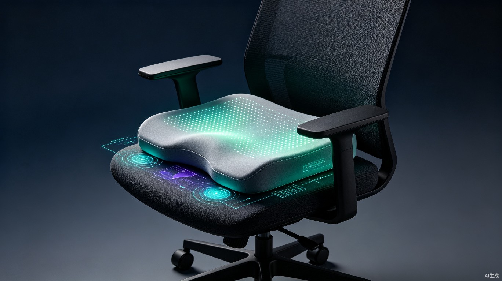
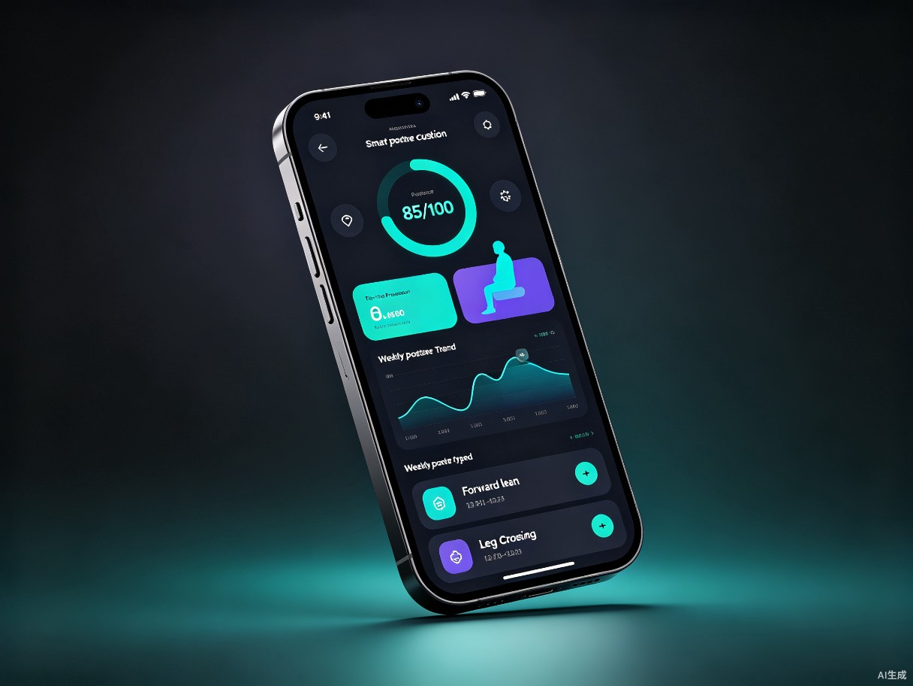

AI 智能姿态矫正坐垫
坐上去，AI 帮你「看见」看不见的不良坐姿 —— 用压力感知 + AI 算法，让每一次久坐都更健康。
创意名称与介绍
SmartCushion AI · 智能姿态矫正坐垫
想解决的问题：现代人日均久坐 8–10 小时，腰椎间盘突出、颈椎病等「久坐病」年轻化趋势显著。大多数人无法感知自己的不良坐姿（前倾、后仰、跷二郎腿），即使知道也容易在专注工作时忘记纠正，长期积累导致慢性损伤。
灵感来源：办公场景中，同事们经常在专注工作数小时后感到腰背酸痛，才发现自己一直弯腰驼背。传统坐垫只能提供被动支撑，无法主动感知坐姿状态、更无法及时提醒。如果坐垫能「看懂」你的坐姿并温柔提醒，就能在损伤发生前干预。
产品形态：一款内置压力传感器矩阵的智能坐垫硬件，配合 AI 算法实时分析坐姿压力分布，识别不良坐姿并通过坐垫震动即时提醒，配套手机 App 提供长期坐姿健康数据追踪与个性化建议。
目标用户与痛点分析
核心用户群体
办公室白领、程序员、设计师等日均久坐超 6 小时的职场人群；考研/考公学生、长时间伏案学习的中大学生；网约车司机、卡车司机等长时间驾驶人群。
核心使用场景
办公室伏案工作、居家学习写作、图书馆长时间自习、长途驾驶等需要持续坐姿 1 小时以上的场景。坐垫即放即用，无需改变原有座椅。
当前痛点
- 无感知：专注工作时完全意识不到自己弯腰驼背、跷二郎腿，等感到酸痛时已经久坐数小时
- 难坚持：即使偶尔意识到坐姿不好，纠正几分钟后又恢复原状，缺乏持续的即时反馈机制
- 无数据：不知道自己每天不良坐姿占比多少、什么时候最差，无法量化追踪改善进度
- 产品不智能：市面矫正坐垫/靠背多为被动支撑，无法适应用户体型和坐姿变化，更无法主动提醒
- 健康焦虑：体检发现腰椎/颈椎问题后才开始关注，但缺乏日常预防手段，陷入「治已病不治未病」的困局
价值与意义
💼 商业价值
久坐健康市场规模超百亿，智能硬件 + 健康数据服务模式具有持续付费潜力。硬件切入后可通过 App 订阅（个性化健康报告、专业体态课程）形成硬件 + 软件双轮营收。同时可拓展 B 端企业集采市场，作为员工健康福利。
⚡ 效率提升
良好坐姿能减少肌肉疲劳和注意力分散，研究显示坐姿改善可提升专注度与工作效率。通过即时提醒减少因腰背不适导致的频繁起身和分心，让用户保持更长时间的高效状态。
❤️ 社会价值
从「治已病」转向「治未病」，通过日常坐姿干预预防腰椎颈椎疾病，降低社会医疗负担。特别关注青少年体态健康，为成长发育关键期的学生群体提供保护，助力国民健康水平提升。
核心功能
实时压力感知
高密度压力传感器矩阵，以 10Hz 采样率采集坐姿压力分布数据
AI 坐姿识别
AI 模型分析压力分布模式，识别前倾/后仰/侧倾/跷腿等 6+ 种坐姿
智能震动提醒
检测到不良坐姿持续 30 秒后，坐垫轻柔震动提醒，不打断工作流
App 数据追踪
蓝牙同步数据至手机，生成每日坐姿评分、趋势报告与健康建议
久坐提醒
自定义久坐时长阈值，到时提醒起身活动，预防长时间静止不动
超长续航
低功耗设计，USB-C 充电一次可使用 30 天，无需频繁充电
差异化亮点：不同于市面被动支撑型坐垫，SmartCushion AI 是首款将压力传感矩阵与 AI 坐姿识别结合的消费级智能坐垫，实现「感知 → 识别 → 提醒 → 追踪」全闭环，让坐姿健康管理真正可量化、可追踪、可坚持。
技术架构
系统分为三层：感知层（压力传感器矩阵采集数据）→ 智能层（边缘 AI 模型实时识别坐姿）→ 应用层（App 数据可视化与健康服务）。
flowchart TB
subgraph 感知层
A[压力传感器矩阵
16x16 压敏点阵]
B[信号采集与预处理
ADC + 滤波降噪]
end
subgraph 智能层
C[边缘 AI 推理
轻量级 CNN 模型]
D[坐姿分类引擎
前倾/后仰/侧倾/跷腿/正常]
E[决策引擎
持续时长判断 + 提醒触发]
end
subgraph 应用层
F[蓝牙 5.0 通信]
G[手机 App
数据可视化 + 健康报告]
H[云端数据平台
趋势分析 + 个性化建议]
end
A --> B --> C --> D --> E
E -->|震动提醒| I[坐垫震动马达]
E --> F --> G --> H
style A fill:#00d4aa22,stroke:#00d4aa,color:#e8ecf4
style C fill:#6366f122,stroke:#6366f1,color:#e8ecf4
style G fill:#00d4aa22,stroke:#00d4aa,color:#e8ecf4
感知层 · 压力传感矩阵
采用 16×16 压阻式传感器阵列，覆盖坐垫接触面，以 10Hz 采样率采集压力分布数据。经过 ADC 转换和滤波降噪后，生成实时压力热力图，为 AI 模型提供高质量输入。
智能层 · 边缘 AI 推理
在坐垫内置 MCU 上部署轻量级 CNN 模型（参数量 < 100KB），实现毫秒级坐姿分类。模型通过数万组真实坐姿压力数据训练，可识别 6 种以上坐姿类型，准确率目标 > 92%。

市场机遇
久坐健康问题已成为中国乃至全球的重大公共卫生挑战，智能坐姿健康产品处于蓝海市场阶段。
用户使用流程
即放即用
将坐垫放置在办公椅/学习椅上，开机后自动校准用户体型和标准坐姿基线
静默守护
正常工作时无感知，AI 持续监测坐姿，仅在检测到不良坐姿持续超阈值时触发轻柔震动
即时反馈
坐垫震动提醒用户调整坐姿，用户无需看手机即可获知并纠正，不打断工作流
数据追踪
打开 App 查看每日坐姿评分、不良坐姿占比、改善趋势，获取个性化坐姿健康建议
持续改善
系统根据长期数据生成周报/月报，推荐针对性体态训练课程，帮助用户持续改善坐姿健康
未来演进路线
| 阶段 | 时间 | 核心目标 |
|---|---|---|
| V1.0 基础版 | 0–6 个月 | 完成硬件原型 + AI 模型训练，实现 6 种坐姿识别 + 震动提醒 + 基础 App |
| V2.0 增强版 | 6–12 个月 | 增加久坐检测、坐姿评分体系、周报月报、个性化建议引擎 |
| V3.0 生态版 | 12–24 个月 | 接入智能家居（联动升降桌）、对接企业健康管理平台、B 端集采方案 |
| V4.0 健康平台 | 24 个月+ | 融合体态课程、在线问诊、保险联动，打造坐姿健康数据平台 |
愿景：让每一把椅子都拥有「感知坐姿」的能力，让坐姿健康管理像步数统计一样自然融入日常生活，从源头预防久坐带来的健康问题，守护亿万久坐人群的脊柱健康。